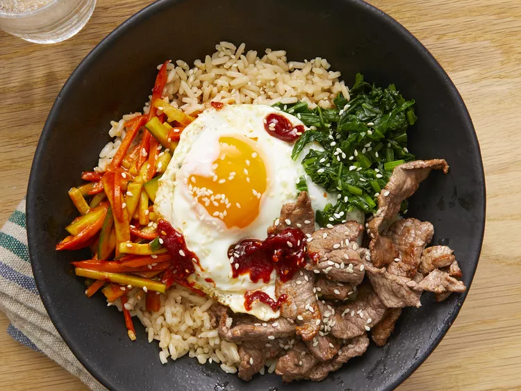

Bibimbap

Description
Bibimbap is a popular Korean dish that translates to "mixed rice" in English. It consists of a bowl of steamed rice topped with an assortment of colorful and nutritious vegetables, often including julienned carrots, spinach, bean sprouts, mushrooms, and zucchini. Additionally, Bibimbap may feature a protein source such as thinly sliced beef (bulgogi), fried egg, or tofu.
The dish is then garnished with gochujang, a spicy red pepper paste, and usually served with a sprinkle of sesame seeds and sometimes sliced nori (seaweed). To enjoy Bibimbap, diners typically mix all the ingredients together thoroughly before eating, creating a harmonious blend of flavors, textures, and colors. The result is a satisfying and visually appealing dish that showcases the vibrant and diverse elements of Korean cuisine.
Ingredients
- 1 English cucumber, cut into matchsticks
- 0.25 cup gochujang
- 1 bunch of fresh spinach, cut into thin strips
- 1 tablespoon soy sauce
- 2 teaspoons olive oil, divided
- 2 carrots, cut into matchsticks
- 1 clove garlic, minced
- 1 pinch red pepper flakes
- 1 pound thinly-sliced beef top round steak
- 4 large eggs
- 4 cups cooked rice
- 4 teaspoons toasted sesame oil, divided
- 1 teaspoon sesame seeds
- 2 teaspoons gochujang
Steps
- Stir together cucumber pieces and gochujang paste in a bowl; set aside.
- Bring 2 cups water to boil in a large nonstick skillet and stir in spinach; cook until bright green and wilted, 2 to 3 minutes.
- Drain spinach and squeeze out as much moisture as possible; set spinach aside in a bowl and stir in soy sauce
- Heat 1 teaspoon olive oil in a large nonstick skillet; cook and stir carrots unitl softened, about 3 minutes
- Stir in garlic and cook just until fragrant, about 1 minute. Stir in cucumber mixture; sprinkle with red pepper flakes. Set carrot mixture aside in a bowl
- Brown beef in a clean nonstick skillet over medium heat, about 5 minutes per side; set aside.
- Heat remaining 1 teaspoon olive oil in another nonstick skillet over medium-low heat. Fry eggs just on one side until yolks are runny, but whites are firm, 2 to 4 minutes.
- Divide cooked rice into 4 large serving bowls; top with spinach mixture, a few pieces of beer and cucumber mixture. Place 1 egg atop each serving. Drizzle each bowl with 1 teaspoon sesame oil, a sprinkleof sesame seeds, and a small amount of gochujang paste.